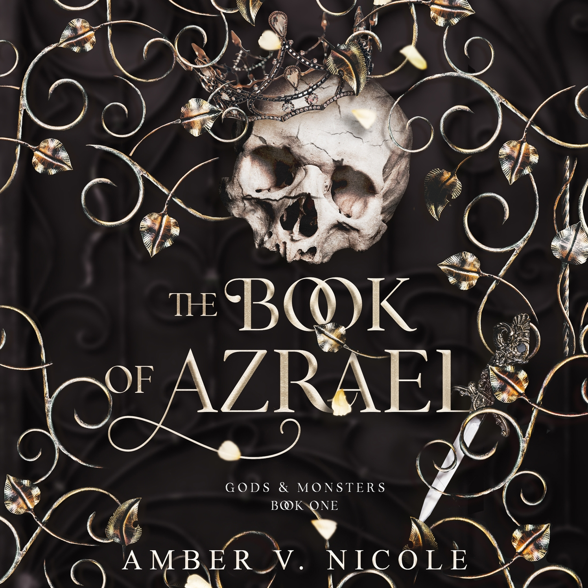

The Book of Azrael
La Trama
Secoli fa, Dianna ha stretto un patto disperato: per salvare sua sorella, ha ceduto la propria anima al Signore Oscuro Kaden, diventando la sua assassina immortale. Da allora, l’ha servito senza esitazione, trasformandosi in una leggenda di sangue e terrore. Ma ora Kaden vuole il Libro di Azrael, un artefatto in grado di riscrivere le leggi dell’universo, e di distruggerlo. Recuperarlo per Dianna è un ordine… e una condanna. Perché si narra che il libro sia nelle mani del Dio Samkiel, che oggi si fa chiamare Liam, ma che tutti ricordano come Sterminatore di Mondi. E che le creature demoniache al servizio di Kaden temono più di ogni altra cosa. Quando i due si affrontano, le fiamme della battaglia rischiano di distruggere tutto ciò che li circonda. Ma c’è un fuoco ancora più insidioso che li consuma: un’attrazione innegabile, pericolosa quanto il destino che incombe su di loro. Se obbedire a Kaden per Dianna significa restare schiava, tradirlo potrebbe invece costarle ogni cosa. In un gioco di inganni e desideri, dove il confine tra amore e odio è sottile come la lama di un pugnale, Dianna dovrà scegliere chi essere… prima che sia troppo tardi.
La Mia Opinione
Questa lettura che mi ha lasciata con sentimenti decisamente contrastanti: The Book of Azriel. Avete presente quei libri che vi fanno venire voglia di lanciare il Kindle dalla finestra e, un secondo dopo, di correre a comprare il seguito? Ecco, esattamente così. Iniziamo dal tasto dolente: la lentezza. Mi rendo conto che, trattandosi del primo volume di una lunga serie fantasy, sia normale dedicare spazio alle presentazioni, ma qui il primo 40% del libro è stato davvero prolisso. La mia “paura” più grande ora? Iniziare il secondo volume e dover rivivere la stessa identica lentezza. È un peccato, perché la storia di base merita, ma si poteva tranquillamente risolvere in meno pagine.
World Building
La mia critica principale, però, va al world building. L’ho trovato veramente confusionario. Ho avuto la sensazione che le informazioni venissero gettate nel mucchio tutte insieme, rendendo difficile capire davvero come fosse strutturato il mondo o entrare pienamente nella storia. Anche il ritmo ne risente: si passa da una lentezza infinita a scene d’azione velocissime, per poi frenare di nuovo bruscamente. Ho trovato un vero filo logico nella trama purtroppo solo verso la fine.
Personaggi - Dianna e Liam: la vera ancora di salvezza
La nota positiva (e che nota!) sono stati loro: Dianna e Liam. Il loro è uno slow burn mooolto slow, ma la chimica c’è e si sente. Sono stati loro a tenermi incollata alle pagine nonostante la confusione generale. E il finale… beh, il finale mi ha lasciata letteralmente a bocca aperta. Proprio quel finale mi ha messo una grandissima voglia di continuare, nonostante le critiche che ho mosso al ritmo.
In conclusione
Nel complesso la storia è bella e il potenziale è altissimo, ma rimango della mia opinione: troppo lento per i miei gusti e un po’ troppo dispersivo
🔥 A colpo d'occhio
- ☕ Atmosfera: Cupa, epica e ancestrale. Si respira un’aria di tempi antichi, divinità dimenticate e regni in rovina. È un’ambientazione carica di tensione e magia oscura.
- 🔥 Chimica: Esplosiva. Il rapporto tra Dianna e Liam è un perfetto enemies-to-lovers. La tensione tra loro è palpabile fin dal primo incontro, fatta di sfide verbali e sguardi che bruciano.
- 🌶️ Spicy: 2/5 (per il primo volume). C’è molta tensione sessuale e desiderio inespresso, ma il libro si concentra più sulla costruzione del legame e sull’azione. Le scene esplicite sono poche ma molto intense.
- 😮💨 Emozione: Struggente. Preparati a momenti di forte vulnerabilità, specialmente legati al passato dei protagonisti e al senso di perdita che entrambi si portano dentro.
- 🍂 Vibe: Villain gets the girl, patti col diavolo e “morirei per te, ma ora potrei ucciderti”. Immagina un mix tra l’oscurità di Kingdom of the Wicked e l’epicità di ACOTAR.